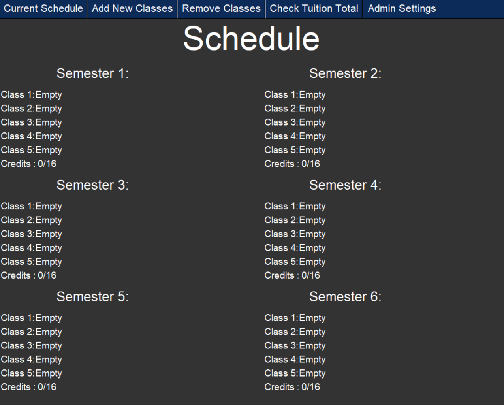
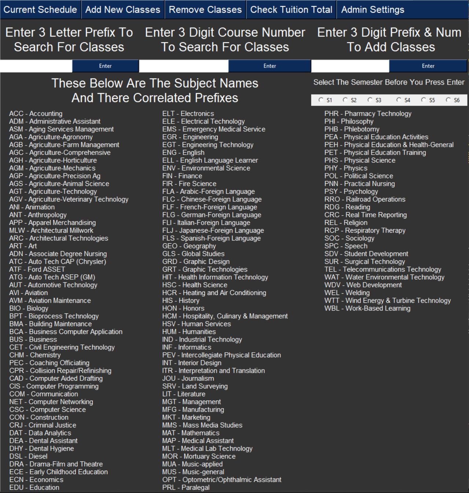
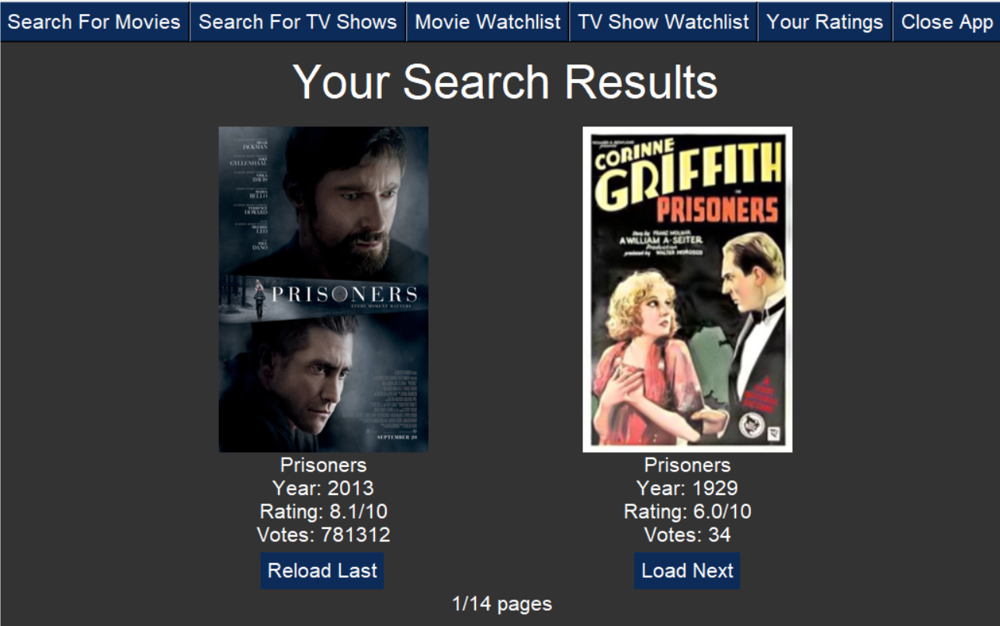
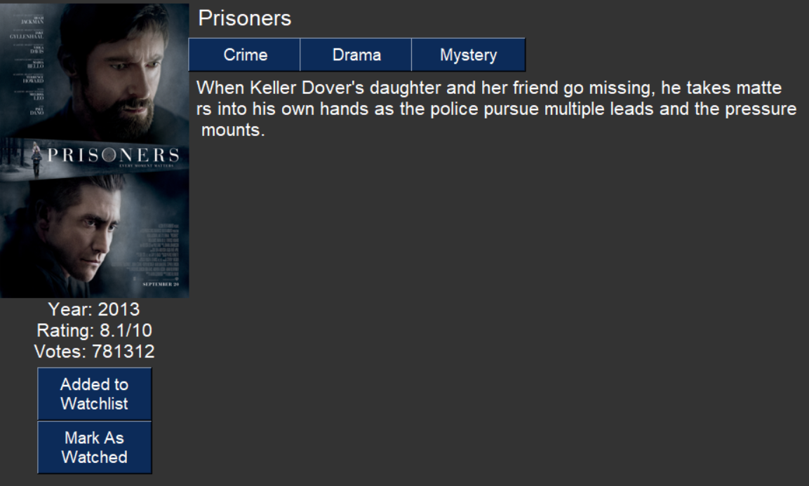
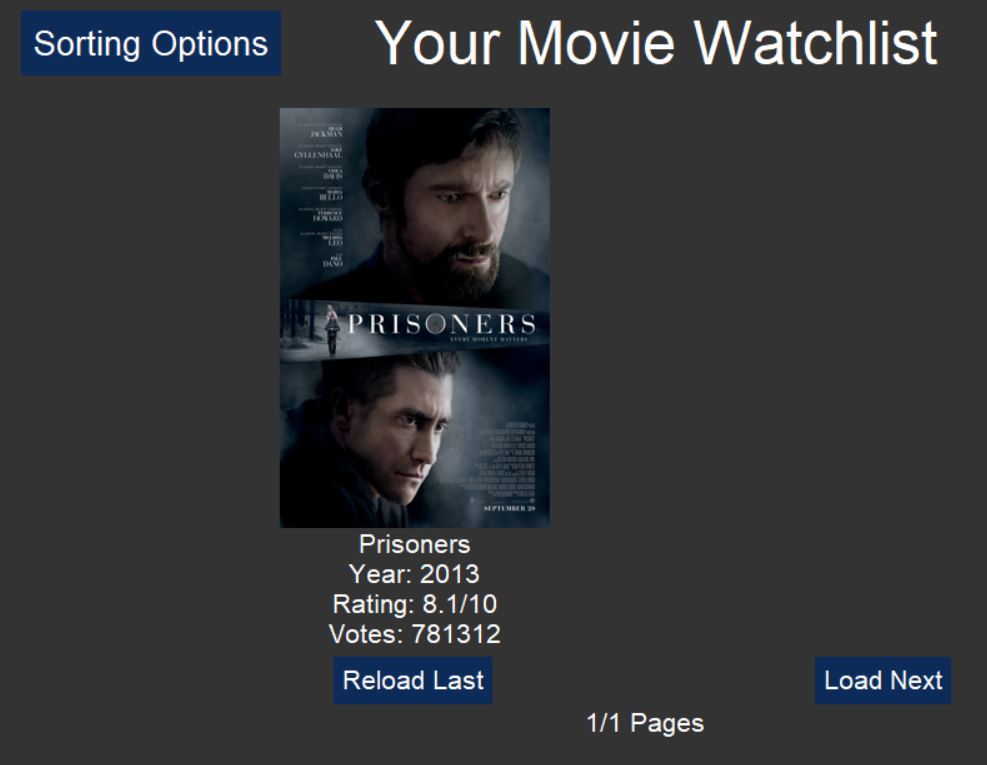

Brayden Hayworth
Software Engineer
I am currently a Junior at Iowa State University persuing a B.S in computer sciecnce. I am also set to intern with Hy-Vee Finacnce IT Engineering Team in the summer of 2025
Software Engineer
I am currently a Junior at Iowa State University persuing a B.S in computer sciecnce. I am also set to intern with Hy-Vee Finacnce IT Engineering Team in the summer of 2025

My first project with a python application made using tnkinter for the GUI. The project was to create a way for students to plan there college courses further in advance at my old community college DMACC. This allowed student to plan there schedules upto 6 semesters in advance with the ability to see all of the over 2000+ courses offered at the college.
 My second project was also a python application made using tnkinter for the GUI. The project was movie and TV show watchlist app which used data files provided by imdb and a little a bit web scraping which was used to display over 500 thousand different movies and TV series to the user. The users were allowed to add things to a watchlist and could sort there watchlists on a few different parameters
  You can reach me at braydenh804@gmail.com